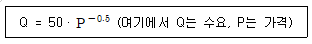
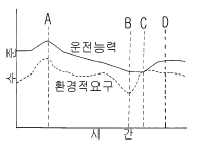
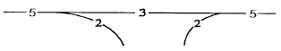
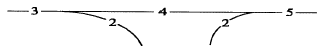
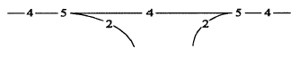
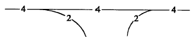
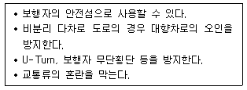

교통산업기사 (2004-08-08 기출문제)
1과목: 교통조사
1. 조사대상 지역의 유입· 유출하는 차량들을 조사하는 방법은?
- 폐쇄선 조사(Cordon line count)
- 스크린라인 조사(Screen line count)
- 차량번호판 조사(license plate survey)
- 가구방문 조사(home interview survey)
(정답률: 알수없음)

2. 새로운 도로망이나 최적노선 선정시 사용하고 도로의 서비스수준 평가에 적용하기 위한 것으로서 1년 교통량을 365로 나눈 교통량은?
- 첨두시간 교통량(PHV)
- 설계시간 교통량(DHV)
- 연평균 일교통량(AADT)
- 중방향 설계시간교통량(DDHV)
(정답률: 알수없음)
3. 어느 구간의 거리를 통행시간에서 정지시간을 감한 시간으로 나눈값을 무엇이라고 하는가?
- 주행속도
- 통행속도
- 지점속도
- 공간평균속도
(정답률: 알수없음)
4. 어느 지방부 도로구간의 년 평균 일 교통량이 5000대이고 년중 30번째 시간의 교통량 비율이 10%, 중방향 교통량의 비율 50%일 때 설계시간 교통량은?
- 200대/시
- 250대/시
- 300대/시
- 350대/시
(정답률: 알수없음)
5. 시험차량조사법에서 조사하지 않아도 되는 것은?
- 대향차량의 속도
- 시험차량이 추월한 차량대수
- 시험차량을 추월한 차량대수
- 소요시간
(정답률: 알수없음)
6. 차량간의 평균차두거리가 15m 이고 차량의 길이는 평균 6m일 때 차량의 밀도는?
- 48대/km
- 67대/km
- 46대/km
- 65대/km
(정답률: 알수없음)
7. 차간시간(gap)의 정의로 올바른 것은?
- 앞차의 앞부분과 뒷부분 사이의 시간간격
- 앞차의 앞부분과 뒷차의 앞부분 사이의 시간간격
- 앞차의 뒷부분과 뒷차의 앞부분 사이의 시간간격
- 앞차의 앞부분과 뒷차의 뒷부분 사이의 시간간격
(정답률: 알수없음)
8. 30m도로구간의 속도를 조사한 결과 A차량은 1초에 통과하고 B차량은 2초에 통과하였다면 두 차량의 시간평균속도는 얼마인가?
- 30m/sec
- 22.5m/sec
- 20.0m/sec
- 15.0m/sec
(정답률: 알수없음)
9. 대기행렬 분석을 위해 필요한 요소로서 해당하지 않은 것은?
- 1일 평균도착율
- 도착분포의 형태
- 평균서비스율
- 대기행렬의 형성형태
(정답률: 알수없음)
10. 다음 중 교통조사에 의해 구한 일평균교통량(ADT)의 용도가 아닌 것은?
- 새로운 시설에 이르는 최적노선 설정
- 차로수결정과 교차로 신호주기 결정
- 도로망 이용수준 결정
- 교통량 및 총 주행거리의 변화 상태 예측
(정답률: 알수없음)
11. 인구 5만명규모의 도시를 대상으로 통행실태를 조사하고자 한다. 미국공로청(BPR)에서 제안한 표본비율을 적용한 다면 몇 명을 대상으로 조사해야 하나?
- 5,000인
- 10,000인
- 15,000인
- 20,000인
(정답률: 알수없음)
12. 주차수요의 추정기법 중 적용변수가 간단하며, 교통패턴이 크게 변하지 않는 상태하에서의 단기적 주차수요 예측에 일반적으로 사용되는 기법은 무엇인가?
- 원단위법
- 자동차 기종점 조사법
- 회귀분석법
- P 요소법
(정답률: 알수없음)
13. 교통희망선(desire line)도는 다음중 어느조사의 결과에 서 작성되는가?
- 교통량조사
- 페쇄선조사
- 가로망조사
- 기종점조사
(정답률: 알수없음)
14. 주차장 설계시 첨두 3시간의 주차수요는 100대, 평균주차 시간은 1.5시간으로 추정된다. 3시간당 평균점유율을 0.7으로 하려면 소요 주차면수는 얼마인가?
- 72면
- 78면
- 82면
- 85면
(정답률: 알수없음)
15. 속도-밀도의 관계식이 직선관계를 가진다고 가정했을 때 자유속도가 120km/h, 혼잡밀도가 64대/km 으로 나타났다면 최대교통류율은 얼마인가?
- 7,680pcphpl
- 1,920pcphpl
- 3,840pcphpl
- 2,150pcphpl
(정답률: 알수없음)
16. 어느 도로에서 한방향에 대하여 평균차두시간을 조사한 결과 3초로 나타났다면 이 때의 방향당 교통량은 얼마인가?
- 1,800대/시
- 3,600대/시
- 1,200대/시
- 2,000대/시
(정답률: 알수없음)
17. 사람통행 조사방법이 아닌 것은?
- 노측면접조사
- 주행산정법
- 가구 방문조사
- 영업용차량조사
(정답률: 알수없음)
18. 버스의 서비스 질을 판단하기 위한 효과척도가 아닌 것은?
- 버스 차내용량
- 운행빈도 및 운행시간
- 버스 정류장의 주차면 용량
- 정류장 용량
(정답률: 알수없음)
19. 폐쇄선(cordon line) 선정시 고려할 사항이 아닌 것은?
- 도시주변의 인접 위성도시나 장래도시화 지역은 제외한다.
- 가급적 행정구역 경계선과 일치시킨다.
- 횡단되는 도로나 철도는 최소화한다.
- 주변에 동이 위치하면 포함시킨다.
(정답률: 알수없음)
20. 도로망체계 계획이나 도로의 신설 및 도로 개선에 대한 타당성 조사 시 사용되는 교통량은?
- 설계시간교통량 (DHV)
- 첨두시간교통량(PHV)
- 교통류율 (Rate of Flow)
- 연평균 일교통량(AADT) 및 평균 일교통량 (ADT)
(정답률: 알수없음)
2과목: 교통운영
21. 2차로도로의 용량분석을 위한 이상적인 도로조건에 해당 되지 않는 것은?
- 측방여유폭이 1.5m이상일 것
- 차로폭이 3.5m이상일 것
- 교통류는 승용차만으로 구성될 것
- 추월가능구간이 0%일 것
(정답률: 알수없음)
22. 일정시간동안 도로의 한구간을 차지하는 모든차량의 평균속도는 무엇인가?
- 시간평균속도(Time Mean Speed)
- 공간평균속도(Space Mean Speed)
- 지점평균속도(Spot Mean Speed)
- 주행평균속도(Running Mean Speed)
(정답률: 알수없음)
23. 정지시거에 영향을 미치는 요소가 아닌 것은?
- 반응시간
- 미끄럼마찰계수
- 속도
- 교통량
(정답률: 알수없음)
24. 신호등을 작동시키는 신호제어기에는 크게 고정시간 신호제어기와 교통감응 신호제어기가 있는데, 이중 교통감응 신호제어기의 장점이 아닌 것은?
- 설치비용이 저렴하다.
- 복잡한 교차로에 적합하다.
- 독립교차로에서 특히 교통량의 시간별 변동이 심할때 사용하면 지체를 최소화한다.
- 주도로와 부도로가 교차하는 곳에서 부도로 교통에 꼭 필요한 때에만 교통량이 큰 주도로 교통을 차단시킬 목적으로 사용하면 좋다.
(정답률: 알수없음)
25. 마찰계수에 영향을 주는 요인이 아닌 것은?
- 도로폭
- 차량속도
- 타이어의 접촉면적
- 노면조건
(정답률: 알수없음)
26. 건물주차용량이 100대, 주차이용대수가 하루 500대, 평균 주차시간이 2시간, 하루 20시간 개방할 때, 주차효율은 얼마인가?
- 0.92
- 0.85
- 0.6
- 0.5
(정답률: 알수없음)
27. 다음 중 교통류를 묘사하는 거시적 모형이 아닌 것은?
- 차량추종모형
- 대기행렬이론
- 충격파이론
- 속도-밀도 모형
(정답률: 알수없음)
28. 도로의 일정 구간을 주행하는 각 차량들의 속도가 전부 동일하지 않은 경우 공간평균속도와 시간평균속도와의 관계를 옳게 설명한 것은?
- 공간평균속도와 시간평균속도는 같다.
- 공간평균속도가 시간평균속도보다 크다.
- 공간평균속도가 시간평균속도보다 적다.
- 공간평균속도와 시간평균속도는 교통류에 따라 달라지므로 비교할 수 없다.
(정답률: 알수없음)
29. ITS 란 무엇인가?
- 자동요금징수 시스템
- 첨단교통체계
- 지능형 교통체계
- 국제교통협회
(정답률: 알수없음)
30. 다음 관계 중 틀린것은?
- 총 통행시간=주행시간+정지지체
- 총 통행시간=순행시간+접근지체
- 순행시간=주행시간+가∙감속지체
- 접근지체=가∙감속지체+정지지체
(정답률: 알수없음)
31. 고속도로 한 구간에서 조사한 공간평균속도가 60km/h, 평균차두시간이 1초일 때 밀도는 얼마인가?
- 40대/km
- 50대/km
- 60대/km
- 70대/km
(정답률: 알수없음)
32. 차량이 움직이는데 발생되는 저항에 대한 설명중 틀린 것은?
- 회전저항 : 노면과 타이어의 마찰과 엔진압축력에 따른 외부저항 또는 에너지손실
- 공기저항 : 차량의 앞면적, 모양 및 속도의 제곱의 함수
- 경사저항 : 경사를 오를 때 중력을 극복하는데 소요되는 힘
- 곡률저항 : 곡선구간을 돌 때 앞바퀴쪽에 작용하여 차량을 안쪽으로 끄는 힘
(정답률: 알수없음)
33. 유효녹색시간을 계산하는 식으로 옳은 것은?
- 녹색시간+출발지체시간-황색시간
- 녹색시간-출발지체시간+황색시간
- 녹색시간-(출발지체시간+황색시간)
- 녹색시간+출발지체시간+황색시간
(정답률: 알수없음)
34. 다음 중 일반적으로 사용하는 속도-밀도 모형이 아닌 것은?
- 직선모형(Greenshields 모형)
- 지수모형(Greeberg 모형)
- 복합모형(Edie 모형)
- 2차식 모형(2nd degree function 모형)
(정답률: 알수없음)
35. 교통량의 공간적 변동에 대한 설명으로 틀린 것은?
- 교통량은 도로의 종류에 따라 다르다.
- 같은 도로라도 방향별로 차이가 있다.
- 같은 방향에서도 차로에 따라 교통량에 차이가 있다.
- 하루 또는 일주일의 양방향 교통량은 심한 불균형을 이룬다.
(정답률: 알수없음)
36. 교차로에서 신호주기 산정방식이 아닌 것은?
- Failure rate Method
- Webster 방식
- Pignataro 방식
- Traffic actuated signal 방식
(정답률: 알수없음)
37. 어느 접근로의 임의 도착교통량이 시간당 300대이다. 30초 동안 3대가 도착할 확률은?
- 0.90
- 0.21
- 0.27
- 0.42
(정답률: 알수없음)
38. 도로용량분석의 근본적인 목적은 무엇을 추정하는 것인가?
- 최대교통량 추정
- 최소교통량 추정
- 평균교통량 추정
- 총교통량 추정
(정답률: 알수없음)
39. 다음중 직진현시 다음에 동시신호가 오는 후행좌회전의 장점이 아닌 것은?
- 신호시간 조정 용이
- 보행자와 상충감소
- 양방향 직진이 동시에 출발
- 연동신호에서 직진차량군의 후미 부분만을 절단
(정답률: 알수없음)
40. 다음중 신호등 운영의 장점이 아닌 것은?
- 직각충돌 및 보행자충돌과 같은 종류의 사고가 감소한다.
- 교차로의 용량이 증대한다.
- 수동식 교차로 통제보다 경제적이다.
- 추돌사고와 같은 유형의 사고가 감소한다.
(정답률: 알수없음)
3과목: 교통계획
41. 다음의 도로 가운데 차량통과 교통을 배제하기 위하여 막힌 도로는?
- 간선도로
- 집산도로(collector or distributor street)
- 국지도로
- 쿨데삭(cul-de-sac)
(정답률: 알수없음)
42. 다음의 통행목적 중 가정기반통행(Home-Based Trip)의 성격이 가장 낮은 것은?
- 출근통행
- 등교통행
- 쇼핑통행
- 업무통행
(정답률: 알수없음)
43. 가구당 통행발생량과 같은 종속변수를 소득이나 자동차보유 대수 등의 설명변수에 의해 교차 분류시켜 도출해내는 교차분류법의 추정모형은?
- 회귀분석법
- 원단위법
- 증감률법
- 카테고리분석법
(정답률: 알수없음)
44. 장래의 차량 교통수요를 추정하는데 거리가 먼 요소는?
- 장래인구
- 차종별 장래 자동차대수
- 장래의 토지이용의 변화
- 장래의 교통사고율
(정답률: 알수없음)
45. 교통계획에서 통행분포를 예측하는 기법으로 가장 널리이용되며 Newton의 만유인력법칙을 교통현상에 적용시켜 어떤 목적통행에 관한 존 간의 교차통행량을 존의 통행유출과 통행유입 및 존 간의 물리적, 시간적, 경제적 거리로 설명하는 모형은?
- 프라타(Frater) 법
- 기회모형(Opportunity Model)
- 엔트로피모형(Entropy Model)
- 중력모형(Gravity Model)
(정답률: 알수없음)
46. 버스노선망을 계획할 때 검토되는 내용으로 거리가 먼 것은?
- 도로망 및 노선망
- 운행횟수
- 배차계획
- 요금수준
(정답률: 알수없음)
47. 도시교통문제를 해결하기 위한 다음의 방안 가운데 가장 단기적인 방안은?
- 지하철의 건설
- 도시순환도로의 건설
- 도시 공간구조의 다핵화
- 교통수요관리기법의 적용
(정답률: 알수없음)
48. 평균운행속도가 35km/h로서 일방향 20km의 노선을 운행하는 최대 45명 정원의 버스가 있다.이 버스노선의 배차간격이 6분일 때 필요한 차량대수(N)는? (단, 양쪽 터미널의 정지시간은 고려하지 않는다.)
- 12대
- 13대
- 11대
- 10대
(정답률: 알수없음)
49. 도시토지이용에 관한 일반모형을 처음으로 시도한 Lowry모형(1964년)은 지역내 도시활동을 3개 부문으로 나누었는데 이에 속하지 않는 것은?
- 교통시설부문
- 기간산업부문
- 주택부문
- 지역산업(서비스)부문
(정답률: 알수없음)
50. 교통수요 추정을 위한 4단계 교통모형 단계가 아닌 것은?
- 통행발생 모형
- 통행분포 모형
- 수단분담 모형
- 로짓(logit)모형
(정답률: 알수없음)
51. 황색시간의 신호시간 결정시 고려되는 항목이 아닌 것은?
- 인간의 지각-반응시간
- 교차로 진입차량의 접근속도
- 횡단보도의 보행량
- 교차로의 횡단길이
(정답률: 알수없음)
52. 다음중 일방통행제의 장점에 해당되지 않는 것은?
- 용량증대
- 상충교통류 감소
- 신호시간조절 용이
- 통행거리 감소
(정답률: 알수없음)
53. 시간대별 교통량의 방향별 분포비 편차가 심하게 나타나는 도로에 적용할 수 있는 교통체계 관리기법은?
- 일방통행제
- 신호체계 연동화
- 능률차로제
- 가변차로제
(정답률: 알수없음)
54. 정지시거에 대한 설명으로 틀린 것은?
- 오르막길에서 정지시거는 짧아진다.
- 설계목적으로 정지시거를 계산할 때는 건조노면 상태를 기준으로 하는 것이 바람직하다.
- 제동거리는 타이어-노면마찰계수와 속도 및 도로의 경사에 좌우된다.
- 공주거리와 제동거리로 이루어진다.
(정답률: 알수없음)
55. 3∼6명의 승객을 실어나르는 승용차정도의 차량이 전용궤도 Network을 통해 수 초의 간격으로 주행하며, 기존 교통수단중에서 택시와 유사한 기능을 지니는 신교통시스템은?
- 왕복,순환궤도시스템(SLT)
- 개별고속수송 시스템(PRT)
- 중량고속수송 시스템(GRT)
- 고속전철(RRT)
(정답률: 알수없음)
56. 교통수요와 교통공급을 동시에 감소시키는 정책이 아닌 것은?
- 대중교통수단의 전용차로제도입(기존차로활용)
- 대중교통수단의 우선 통행
- 노상주차제한
- 승용차 제한구역 설정
(정답률: 알수없음)
57. 각 신호등의 기준시점에서 녹색신호 개시시점의 시간, 혹은 인접신호등간의 상대적인 녹색신호 개시시점의 시간으로 시간(초) 또는 주기에 대한 비율로 나타내는 신호제어 파라미터는?
- 주기
- 현시
- 옵셋
- 유효녹색시간
(정답률: 알수없음)
58. 다음과 같은 수요함수에서 가격이 20% 인상될 경우 탄력성을 이용하여 수요가 얼마나 변화하는지 계산하면?

- 10% 증가
- 10% 감소
- 5% 증가
- 5% 감소
(정답률: 알수없음)
59. 다음 중 교통수단 선택모형으로서의 개별행태모형에 대한 설명으로 바르지 못한 것은?
- 결정적 모형임
- 효용이론에 근거함
- 타지역이나 타교통존에 적용가능함
- 개인의 통행행태 관련자료를 이용
(정답률: 알수없음)
60. 교통신호기는 그 운영방식에 따라 고정시간신호기와 교통감응신호기로 나눌 수 있다. 다음 중 고정시간 신호기의 장점은?
- 인접신호등과 연동시키기 편리하고 연속된 교차로에 대한 차량당 평균지체가 적다.
- 복잡한 교차로에 적합하다.
- 독립교차로에서 교통량의 시간별 변동이 심할 때 사용하면 지체를 최소화할 수 있다.
- 주도로교통에 불필요한 지체를 주지 않도록 계속적인 <정지-진행>의 운영을 할 수 있다.
(정답률: 알수없음)
4과목: 교통안전
61. 한 차량이 10m 거리를 미끄러져 주차한 차량과 충돌하였으며 충돌후 두차량이 함께 2m를 미끄러져 정지하였다. 양 차량의 무게가 동일할 때, 주행차량의 초기속도는? (단, 마찰계수는 0.5로 가정한다.)
- 27kph
- 47kph
- 87kph
- 107kph
(정답률: 알수없음)
62. OECD에서 교통안전의 접근방법으로 "모든사고에 있어 특정사건은 부분적으로 그에 앞선 행동 또는 환경의 결과이다"라는 전제하에 도로외상을 유발하는 과정을 통하여 결정적인 선 또는 경로를 찾는 방법으로 개발한 기법은?
- 다원인 동적체계 접근
- 다원인 정적체계 접근
- 다원인 기회현상 접근
- 단일원인 사고경향 접근
(정답률: 알수없음)
63. 교통사고의 유발요인은 크게 인적요인, 도로환경적요인 및 차량요인으로 나누어진다. 다음 중 차량요인에 해당하는 항목은?
- 신호등 고장
- 음주 운전
- 운전중 승객과 대화
- 조향장치 고장
(정답률: 알수없음)
64. 사고경험에 기초한 위험지점을 선정할 때 사고건수법에 대한 설명으로 틀린것은?
- 소도읍의 가로망, 교통량이 적은 지방부 도로에 효과적으로 사용된다.
- 가장 단순하고 직접적인 접근법이다.
- 모든사고는 지점별, 발생기간별로 기록된다.
- 교통사고가 발생할 확률은 포아송의 분포를 따른다.
(정답률: 알수없음)
65. 차량이 도로를 벗어나 도로의 맨 끝으로부터 수평거리 20m, 높이 15m의 지점에 추락하였다면 추락할때의 이 차량의 속도는 얼마인가?
- 31.16km/시
- 38.16km/시
- 41.16km/시
- 46.16km/시
(정답률: 알수없음)
66. 초등학생 교통사고를 줄이기 위한 방안으로 적당치 않는 것은?
- 스쿨죤(School zone)을 설치한다.
- 신호주기에 적용되는 보행자 속도를 초당 1m에서 초당 1.2 m 로 높인다.
- 1학년 학생은 반드시 보호자를 대동하여 횡단하게 하거나 교사가 교통 횡단지도를 하게 한다.
- 과속방지턱을 주변도로에 설치한다.
(정답률: 알수없음)
67. 교통사고 발생과정을 3가지 국면으로 나눌 때 다음 중 이들에 포함되지 않는 것은?
- 충돌 전
- 충돌 직전
- 충돌 중
- 충돌 후
(정답률: 알수없음)
68. 교통대응방식의 연동화된 신호등을 설치하여 감소시킬 수 있는 사고는?
- 추돌사고
- 직각충돌사고
- 정면충돌사고
- 좌회전충돌사고
(정답률: 알수없음)
69. 자동차의 브레이크가 작동할 때 타이어와 노면사이에 마찰작용이 일어나면서 차가 이동한 거리를 무슨 거리라 하는가?
- 정지 거리
- 공주 거리
- 반응 거리
- 제동 거리
(정답률: 알수없음)
70. 아래 그림은 운전능력과 환경적 요구를 나타내고 있다. A, B, C, D 중 어느 지점에 사고가 발생하는가?

- A
- B
- C
- D
(정답률: 알수없음)
71. 일평균교통량(ADT)이 1,000대인 한 도로의 연장 2km 구간에서 연 5건의 사고가 발생하였을 때 이 구간의 백만차량 -km 당 사고건수는?
- 5.8건
- 6.8건
- 7.8건
- 8.8건
(정답률: 알수없음)
72. 다음중 조명과 교통사고와의 관계를 잘못 설명한 것은?
- 조도를 높이면 교통사고는 일반적으로 감소한다.
- 도로의 재포장으로 마찰계수가 높아지면 낮동안의 교통사고는 감소한다.
- 커브길에 가로등을 설치하면 교통사고는 감소한다.
- 포장면이 빛을 반사하는 정도가 낮아지면 야간 교통사고는 감소한다.
(정답률: 알수없음)
73. 교통사고 예방을 위한 대책을 받아들이는데 있어 안전과 이동성의 상충으로 수용하기 어려운 대책은?
- 가로차단
- 안전띠 착용
- 에어 백
- 부러지는 지주
(정답률: 알수없음)
74. 다음 중 중앙분리대의 형식이 아닌 것은?
- 횡단형
- 방책형
- 억제형
- 분리형
(정답률: 알수없음)
75. 노변방호책 설계지침으로 맞지 않는 것은?
- 차량의 방향을 수정해야 한다.
- 차도를 이탈한 차량을 즉각 정지시켜야 한다.
- 허용 최대감속을 유지해야 한다.
- 차량이 걸려 전도하지 않아야 한다.
(정답률: 알수없음)
76. 다음 중 교통사고 조사시 활용되는 현황도에 대한 설명 중 틀린 것은?
- 교통사고다발지점에서 중요한 물리적 현황을 축척에 맞추어 그린 것이다.
- 충돌도와 함께 사고패턴을 해석하는 보조자료로서 사용된다.
- 일반적인 축척은 1:5,00에서 1:1,000의 범위이다.
- 차량의 이동에 영향을 미치는 중요한 요인들이 나타내어진다.
(정답률: 알수없음)
77. 사고자료를 공학적으로 이용코자할 때 가장 적절한 사고 보고서의 정리형태는?
- 사고발생 지점별
- 사고발생 시간별
- 사고발생 요일별
- 사고발생 월별
(정답률: 알수없음)
78. 위험도를 평가하는 수법중 과거의 사고자료를 사용하지 않고 현재의 잠재적인 사고 가능성을 조사하여 위험도를 판정하는 방법은?
- 사고건수법
- 사고율법
- 통계적방법
- 교통상충법
(정답률: 알수없음)
79. 교차로와 인터체인지에서의 사고에 대한 설명 중 틀린 것은?
- 램프의 사고율은 주도로나 램프의 교통량과는 무관하며, 램프의 간격은 큰 램프를 띄엄띄엄 설치하는 것보다 작은 램프를 조밀하게 설치하는 것이 안전하다.
- 도시내의 교통사고는 상당한 부분이 교차로에서 발생하며, 이러한 사고는 교차로의 종류, 교차로의 기하구조, 교통량 및 교통통제설비에 좌우된다.
- 일반적으로 3지교차로가 4지교차로보다 사고율이 높으며, 또 사고율은 주도로의 교통량보다 부도로(교차도로)의 교통량에 의해 더 크게 영향을 받는다.
- 비보호좌회전에 의한 사고는 좌회전 전용차로가 있는 보호좌회전 때의 사고율보다 3배 정도 높다.
(정답률: 알수없음)
80. 다음중 사고가 집중적으로 발생하는 지점의 신속한 시각적 색인을 제공하는 것은?
- 대상도
- 사고지점도
- 충돌도
- 현황도
(정답률: 알수없음)
5과목: 교통시설
81. 설계속도 100km/hr, 마찰계수 0.23, 편구배 4%에 대한 최소 곡선반경으로 가장 적합한 것은?
- 50m
- 100m
- 200m
- 300m
(정답률: 알수없음)
82. 교차로 설계시 고려하여야 할 기본원리에 해당되지 않는 것은?
- 설계와 교통통제를 조화시킬 것
- 이질교통류를 통합시킬 것
- 복잡한 합류와 분류를 피할 것
- 교통량이 많고 빠른 교통류에 우선권을 줄 것
(정답률: 알수없음)
83. 도로의 배수시설을 위한 부속물이 아닌 것은?
- 측구
- 도수로
- 집수정
- 분리대
(정답률: 알수없음)
84. 악천후나 강우시 노면에 물이 고임으로 인해 노면표시선 또는 중앙표시선이 보이지 않을 경우에 운전자가 차로를 유지할수 있도록 설치하는 것은?
- 황색실선
- 표지병
- 시선유도표지
- 도로반사경
(정답률: 알수없음)
85. 주차장에 대한 설명으로 틀린 것은?
- 주차구획은 주차만을 위한 장소이다.
- 주차면의 배치 방법에는 평행주차, 각도주차가 있다.
- 주차방식에는 전진주차, 후진주차, 전진주차 전진발 차가 있다.
- 주차장은 그 기능으로 보아 주차구획과 차도로 나누어 생각한다.
(정답률: 알수없음)
86. 일반적으로 차로수의 균형원칙에 가장 부합하는 차로수 배분은?




(정답률: 알수없음)
87. 교통섬의 주역할이 아닌 것은?
- 차량의 주행로를 분명히 설정하여 준다
- 교통 흐름을 분리하여 준다
- 보행자 보호 및 교통관제시설의 설치공간을 확보한다
- 노상 주차장으로 사용할 수 있다
(정답률: 알수없음)
88. 다음 중 우회전 차로의 설치 효과로 볼 수 없는 것은?
- 도로용량 증대
- 직진 교통류의 혼란 감소
- 정지선을 전진시킬 수 있다.
- 우회전 차량의 속도를 줄일 수 있다.
(정답률: 알수없음)
89. 다음 용어 정의가 틀린 것은?
- 설계속도 : 도로 설계의 기초가 되는 자동차의 속도
- 노상시설 : 도로의 부속물로서 보도, 자전거도로, 중앙분리대 등에 설치되는 시설
- 환경시설대 : 도로 주변의 환경보전을 위하여 도로 안쪽에 설치되는 주차장 등의 시설이 설치된 지역
- 교통섬 : 차량이 안전하고 원활한 교통을 확보하거나 보행자의 안전한 도로횡단을 위하여 교차로 또는 차도의 분기점등에 설치되는 시설
(정답률: 알수없음)
90. 도로표지는 표지의 설치기준에 따라 운전자의 눈에 잘보 이는 곳에 설치한다. 도로표지 설치방법이 아닌 것은?
- 정주식
- 측주식
- 문형식
- 간편식
(정답률: 알수없음)
91. 평면선형 곡선 중에서 산악지역 도로에서 지그재그(zigzag)식으로 올라가는 도로에서 볼 수 있으며, 교각이 180° 에 가까운 곡선은?
- 단원곡선
- 측방곡선
- 반향곡선
- 클로소이드곡선
(정답률: 알수없음)
92. 평면선형의 구성요소가 아닌 것은?
- 직선
- 원곡선
- 완화곡선
- 종단곡선
(정답률: 알수없음)
93. 500m의 수평거리에 20m의 높이차가 있는 경우 종단구배는 몇 %인가?
- 1
- 2
- 3
- 4
(정답률: 알수없음)
94. 주차장의 램프 설계시 일반적인 최대 설계용량은?
- 400대/시
- 700대/시
- 900대/시
- 1100대/시
(정답률: 알수없음)
95. 다음은 과속방지시설의 설치위치에 관한 사항이다. 옳지 않은 것은?
- 어린이놀이터, 근린공원, 마을통과지점 등으로 차량의 속도를 규제할 필요가 있는 구간
- 특정시설물(공동주택, 학교, 병원 등의 건축물)의 주변도로
- 아파트 관리 책임자가 필요하다고 판단되는 모든 장소
- 통행속도를 30km/h 이하로 제한할 필요가 있다고 인정되는 도로
(정답률: 알수없음)
96. 다음과 같은 효과를 가져올 수 있는 교통시설은?

- 교통섬
- 중앙분리대
- 우회전 차로
- 측도
(정답률: 알수없음)
97. 4지 입체교차 형식 중 가장 단순하며, 용지가 적게 소요되고, 교차구조물이 최소화 되어 타형식에 비해 건설비가 저렴하지만, 유료도로의 경우 요금소가 4개로 분산되어 관리비가 증대되는 결점이 있는 입체교차 형식은?
- 트럼펫형
- 불완전 클로버형
- 다이아몬드형
- 직결 Y형
(정답률: 알수없음)
98. 편경사가 설치되지 않은 일반구간에서 배수를 위하여 횡단경사를 설치한다. 이때 아스팔트 및 시멘트 포장도로의 차도부 횡단경사(%)의 범위는?
- 1.0 이상, 1.5 이하
- 1.5 이상, 2.0 이하
- 2.0 이상, 4.0 이하
- 3.0 이상, 6.0 이하
(정답률: 알수없음)
99. 도로의 구조· 시설기준에 관한 규칙에서 정하고 있는 도로의 계획목표연도는?
- 10년
- 20년
- 30년
- 40년
(정답률: 알수없음)
100. 도로의 노면 또는 교통광장의 일정한 구역에 설치된 주차장은?
- 유료주차장
- 노상주차장
- 노외주차장
- 건축물 부속주차장
(정답률: 알수없음)